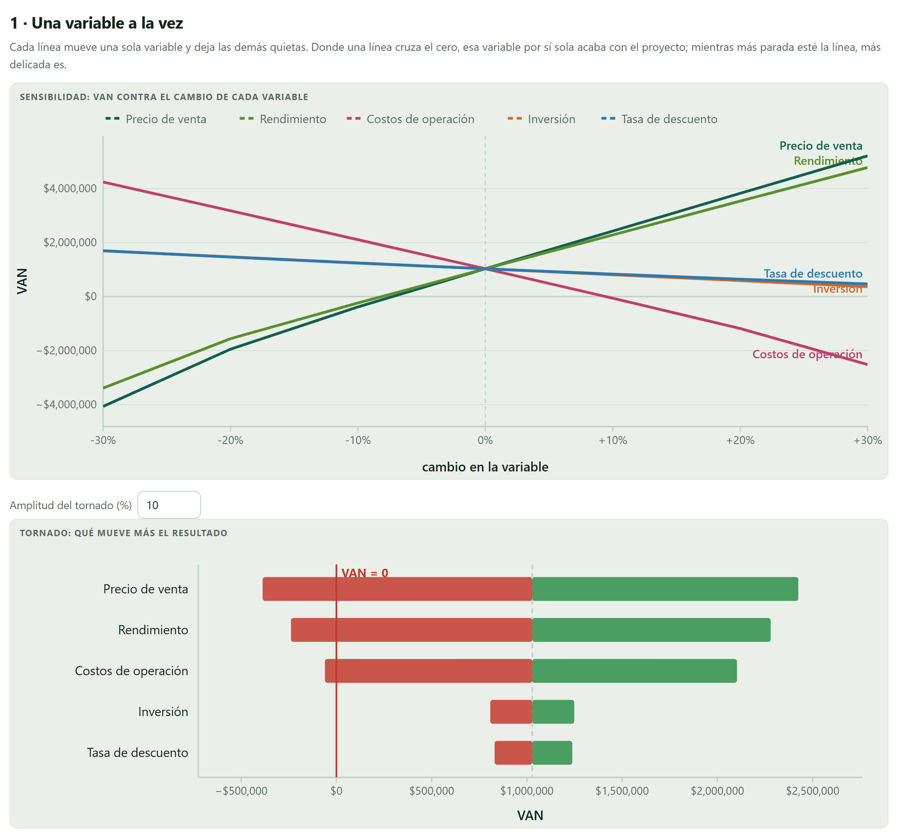
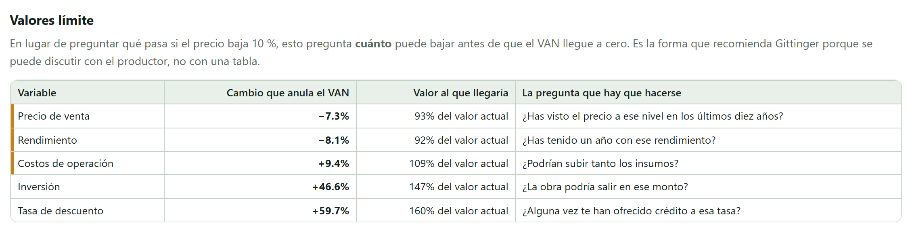
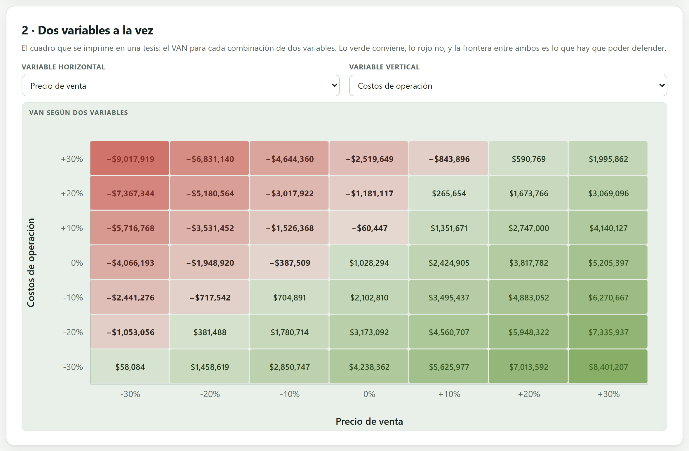
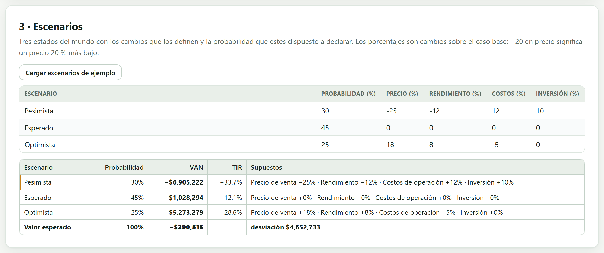
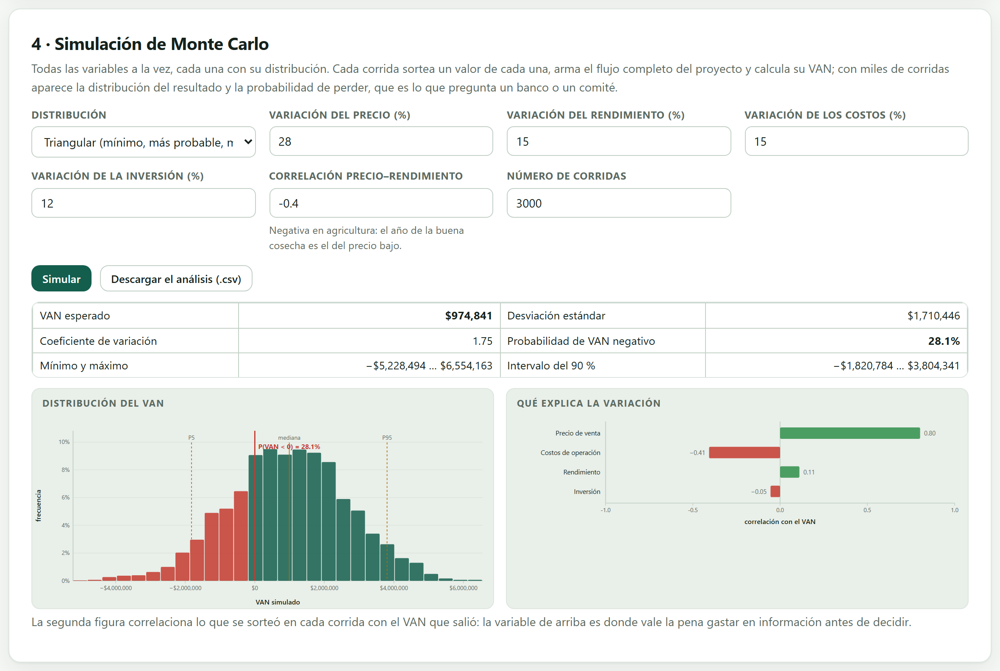
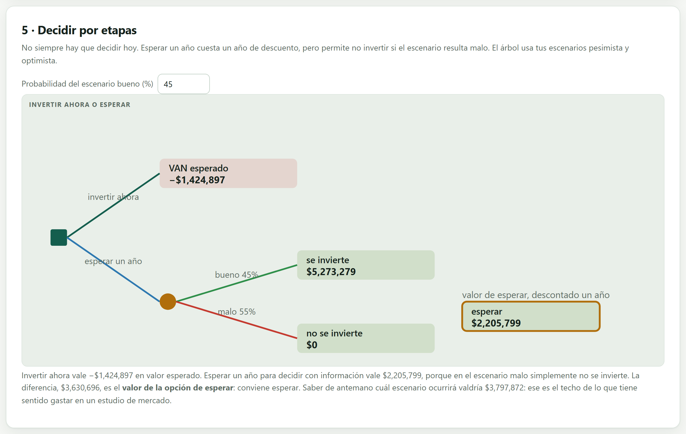

El Bloque 6 entregó un número. Este bloque pregunta qué tan firme es. Mueve una variable a la vez, luego dos, luego todas juntas con sus distribuciones; calcula cuánto puede caer cada supuesto antes de que el VAN llegue a cero, arma escenarios con su probabilidad y termina preguntando si conviene decidir hoy o esperar un año a saber más.
Este bloque no vuelve a capturar nada del proyecto: toma el flujo que quedó armado en los bloques 2 a 5 y lo vuelve a calcular muchas veces, cambiando los supuestos. Lo único que se escribe aquí son los rangos, las probabilidades y los escenarios que uno está dispuesto a sostener.
Lo que no hace es adivinar el futuro. Ninguna de las cinco herramientas produce información nueva sobre el precio de la fresa: lo que hacen es convertir tu incertidumbre —la que tú declaras— en consecuencias sobre el VAN. Si los rangos son inventados, los resultados también lo son; la app obliga a escribirlos precisamente para que queden a la vista y se puedan discutir.
La distinción es de Knight (1921) y sigue ordenando el capítulo. Hay riesgo cuando se pueden poner probabilidades a los estados posibles: hay serie histórica, hay experiencia, hay base para decir «treinta por ciento». Hay incertidumbre cuando ni siquiera eso se puede: no se sabe qué puede pasar, mucho menos con qué frecuencia.
Las herramientas de este bloque se reparten esa frontera. La sensibilidad, el tornado y los valores límite no piden probabilidades: sirven bajo incertidumbre, porque solo describen qué pasa si. Los escenarios y la simulación sí las piden, y por eso valen lo que valga la probabilidad declarada. Ponerle una distribución a algo que no se conoce no lo vuelve conocido: lo disfraza.
El bloque usa como caso de práctica la Fresa bajo macrotúnel en Zamora: dos hectáreas, diez años, una tasa del 7.58 % y un VAN de $1,028,294. Es el caso que la app trae pensado para este bloque —inversión grande, crédito pesado y márgenes estrechos—, es decir, un proyecto que se ve bien en el Bloque 6 y que aquí se descubre frágil.
La primera tarjeta mueve cada supuesto por separado, entre −30 % y +30 %, y deja los demás quietos. Da dos figuras que dicen lo mismo de dos formas.

En la araña lo que importa es la pendiente: mientras más parada esté la línea, más delicada es esa variable. Las del precio y el rendimiento suben casi juntas y muy inclinadas; las de la inversión y la tasa de descuento son casi horizontales. Eso ya dice dónde está el problema del proyecto antes de calcular nada.
| Variable | VAN si baja 10 % | VAN si sube 10 % | Amplitud |
|---|---|---|---|
| Precio de venta | −$387,509 | $2,424,905 | $2,812,414 |
| Rendimiento | −$238,594 | $2,279,978 | $2,518,572 |
| Costos de operación | $2,102,810 | −$60,447 | $2,163,257 |
| Inversión | $1,248,713 | $807,720 | $440,993 |
| Tasa de descuento | $1,238,301 | $830,359 | $407,942 |
Las tres primeras mueven el VAN entre $2.2 y $2.8 millones con solo un 10 % de cambio; las dos últimas, menos de la mitad de un millón. Y las tres primeras, en su lado malo, ya dejan el VAN negativo. Un 10 % de error en el precio no es un error grande en un estudio de mercado: es lo normal. Este proyecto no aguanta lo normal.
El tornado suele sorprender porque la inversión —lo que todo el mundo discute en la junta— queda al final. La razón es aritmética: la inversión se paga una vez, en el año cero, mientras que el precio y el rendimiento afectan a los ingresos de los diez años y su efecto se acumula. Que la inversión pese poco no significa que se pueda inflar el presupuesto; significa que discutir dos semanas el costo del macrotúnel, mientras nadie revisa el precio de la fresa, es gastar la atención en el lugar equivocado.
La sensibilidad contesta «qué pasa si el precio baja 10 %». El valor límite —switching value— invierte la pregunta: cuánto puede bajar el precio antes de que el VAN llegue a cero. La app lo busca numéricamente para cada variable y ordena la tabla de la más frágil a la más resistente.

Gittinger (1982) recomienda reportar valores límite en lugar de tablas de sensibilidad por una razón práctica: el valor límite se puede contrastar con la experiencia. Decir «el VAN se vuelve cero si el precio cae 7.3 %, es decir a 93 pesos de cada 100 de los que pusimos» permite preguntarle a quien conoce el mercado si ha visto ese precio; una tabla de veinte celdas no permite preguntar nada.
La regla de lectura es sencilla: un valor límite menor al 10 % es una bandera roja, porque un 10 % está dentro del error normal de cualquier proyección. Entre 10 y 25 % el resultado es discutible; arriba de 25 % la variable prácticamente no amenaza al proyecto.
| Variable | Cambio que anula el VAN | Valor al que llegaría | Lectura |
|---|---|---|---|
| Precio de venta | −7.3 % | 93 % | bandera roja |
| Rendimiento | −8.1 % | 92 % | bandera roja |
| Costos de operación | +9.4 % | 109 % | bandera roja |
| Inversión | +46.6 % | 147 % | resistente |
| Tasa de descuento | +59.7 % | 160 % | resistente |
La obra podría costar casi la mitad más de lo presupuestado y el proyecto seguiría siendo viable; el crédito podría encarecerse hasta una tasa un 60 % más alta y aguantaría. Pero basta que la fresa se pague un 7.3 % menos para que el VAN desaparezca. Ese es el hallazgo del capítulo de riesgo de esa tesis, y va en el resumen, no en un anexo.
Si una variable no alcanza a anular el VAN dentro del rango que la app explora —de 2 % a 8 veces su valor—, la celda queda vacía y la variable se va al final de la tabla. Que todas queden vacías es raro: o el proyecto es extraordinariamente robusto, o hay algo mal capturado en los bloques anteriores. La app lo dice con una nota en la tarjeta de revisión.
Las variables no se mueven de una en una. La segunda tarjeta cruza dos —las que se elijan— en una rejilla de siete por siete, cada una entre −30 % y +30 %, y colorea el VAN de rojo a verde.

Esta es la figura que se imprime en una tesis, y se lee por su frontera, no celda por celda. En la fila central —costos como se presupuestaron— el proyecto aguanta una caída del precio de menos del 10 %: con −10 % el VAN ya es −$387,509. Pero si además los costos suben 10 %, el precio ya no puede caer nada: con el precio en su valor base y los costos 10 % arriba el VAN es −$60,447, prácticamente cero.
| Costos · Precio | −20 % | −10 % | base | +10 % |
|---|---|---|---|---|
| +20 % | −$5,180,564 | −$3,017,922 | −$1,181,117 | $265,654 |
| +10 % | −$3,531,452 | −$1,526,368 | −$60,447 | $1,351,671 |
| base | −$1,948,920 | −$387,509 | $1,028,294 | $2,424,905 |
| −10 % | −$717,542 | $704,891 | $2,102,810 | $3,495,437 |
El caso base está rodeado de rojo por dos lados. Bajar los costos un 10 % —negociar el empaque, el flete o la plántula— deja el VAN en $2,102,810, casi lo mismo que subir el precio esa misma proporción ($2,424,905); con la diferencia de que el costo se negocia con un proveedor y el precio no se negocia con nadie.
La rejilla supone que las dos variables son independientes: cada celda combina un precio con un costo como si uno no dijera nada del otro. Eso es razonable para precio contra costos, y es falso para precio contra rendimiento —que en agricultura se mueven en contra— o para inversión contra tasa de descuento. Si las variables están relacionadas, buena parte de las celdas describe mundos que no pueden ocurrir, y el cuadro exagera tanto lo bueno como lo malo. Para eso está la simulación de la sección 7.6, que sí sabe correlacionar.
Un escenario no es una variable: es un estado del mundo completo, con todos sus supuestos moviéndose a la vez y con una probabilidad declarada. La tercera tarjeta los captura en una hoja y calcula el VAN, la TIR y el valor esperado.

| Escenario | Prob. | VAN | TIR | Supuestos |
|---|---|---|---|---|
| Pesimista | 30 % | −$6,905,222 | −33.7 % | precio −25 %, rend. −12 %, costos +12 %, inv. +10 % |
| Esperado | 45 % | $1,028,294 | 12.1 % | todo como se presupuestó |
| Optimista | 25 % | $5,273,279 | 28.6 % | precio +18 %, rend. +8 %, costos −5 % |
| Valor esperado | 100 % | −$290,515 | — | desviación estándar $4,652,733 |
El Bloque 6 dictaminó «conviene realizarlo» con un VAN de $1,028,294. Pesados por su probabilidad, los tres escenarios dan un valor esperado negativo. No hay error en ninguno de los dos: el primero evalúa el caso más probable, el segundo evalúa la apuesta completa. Y la desviación —$4.65 millones, dieciséis veces el valor esperado— dice que el resultado depende casi por entero de cuál mundo ocurra.
Es el precio 25 % abajo y el rendimiento 12 % abajo y los costos 12 % arriba y la inversión 10 % arriba, todo en el mismo mundo. Por eso su VAN (−$6.9 millones) es mucho peor que cualquier celda de la sensibilidad, y por eso hay que preguntarse si ese mundo es coherente: ¿es creíble que caiga el precio y al mismo tiempo suban los costos? En la fresa sí —una sobreoferta regional baja el precio mientras el empaque y el flete siguen subiendo con la inflación—, y por eso el escenario se sostiene. Un escenario mal armado es peor que no tener escenarios, porque le pone probabilidad a algo imposible.
Si no suman, la app normaliza para calcular el valor esperado y lo avisa. Normalizar salva la cuenta, no el razonamiento: si las probabilidades suman 80 % es porque falta un estado del mundo que nadie escribió.
Los escenarios describen tres mundos. La simulación describe miles: en cada corrida sortea un valor de cada variable según la distribución declarada, rearma el flujo completo del proyecto —ingresos, costos, impuestos, crédito— y calcula su VAN. Con tres mil corridas aparece la distribución del resultado y, sobre todo, la probabilidad de perder, que es lo que pregunta un banco o un comité.

| Distribución | Cuándo usarla |
|---|---|
| Triangular | Cuando solo hay tres números: mínimo, más probable y máximo. Es la opción honesta cuando la información viene de un experto y no de una serie. Es la que la app usa por omisión. |
| PERT | Igual que la triangular, pero pesa mucho más el valor central y suaviza las colas. Se prefiere cuando el valor más probable es realmente el más creíble. |
| Normal | Cuando hay una serie histórica de la que se sacó una media y una desviación. La app toma la mitad del rango declarado como desviación estándar. |
| Uniforme | Cuando de veras no se sabe nada dentro del rango. Es la más conservadora y la que más ensancha el resultado. |
El rango se declara como un porcentaje alrededor del valor base: 28 % en el precio significa que puede ir de 72 a 128 pesos por cada 100 presupuestados. Ese número no se inventa: sale de la misma serie con la que se proyectó el precio en el Bloque 3.
| VAN esperado | $974,841 | Desviación estándar | $1,710,446 |
| Coeficiente de variación | 1.75 | Probabilidad de VAN negativo | 28.1 % |
| Mínimo y máximo | −$5,228,494 … $6,554,163 | Intervalo del 90 % | −$1,820,784 … $3,804,341 |
La frase que va en la tesis es: «con los rangos declarados, el proyecto tiene un 28 % de probabilidad de dar un VAN negativo, y en el 90 % de los casos el VAN queda entre −$1.8 y $3.8 millones». Un banco no pregunta el VAN: pregunta eso.
La media simulada ($974,841) queda muy cerca del VAN del caso base ($1,028,294), lo que es buena señal: quiere decir que los rangos están centrados y que no se metió un sesgo por descuido. La mediana, $991,495, confirma que la distribución es casi simétrica.
Los escenarios dieron un valor esperado de −$290,515 y la simulación da +$974,841. La diferencia no es un error: los escenarios apilan cuatro desgracias en un solo mundo y le asignan el 30 % de probabilidad, mientras que la simulación sortea cada variable por separado y solo rara vez le tocan las cuatro en contra al mismo tiempo. Además, la correlación negativa entre precio y rendimiento impide justo eso.
Las dos cifras se reportan juntas y se explica la diferencia. Quien solo reporta la que le conviene está escogiendo el resultado, no analizando el riesgo.
En agricultura el año de la buena cosecha suele ser el del precio bajo: si todos cosechan mucho, el mercado se satura. Suponer que precio y rendimiento son independientes exagera el riesgo, porque deja que la simulación produzca años catastróficos con poca producción y precio bajo a la vez, que en la realidad casi no ocurren.
La app permite declarar esa correlación —en la fresa, −0.4— y la impone sobre los sorteos por el método de Iman y Conover (1982), que reordena las muestras hasta que sus rangos tengan la correlación pedida sin deformar ninguna distribución. Si se deja en cero, la app lo advierte.
| Variable sorteada | Correlación con el VAN | Lectura |
|---|---|---|
| Precio de venta | 0.80 | casi toda la incertidumbre del resultado |
| Costos de operación | −0.41 | importa, y se puede negociar |
| Rendimiento | 0.11 | pequeño, porque la correlación lo compensa |
| Inversión | −0.05 | irrelevante para la incertidumbre |
Esta tabla dice dónde conviene gastar en información. Con 0.80 de correlación, cada peso que se gaste en un buen estudio de precios reduce más incertidumbre que todo lo que se pueda averiguar sobre las otras tres variables juntas. El rendimiento aparece bajo no porque no importe —en el tornado era la segunda— sino porque la correlación negativa con el precio cancela buena parte de su efecto sobre el VAN.
La simulación usa un generador con semilla fija: correrla otra vez con los mismos rangos da exactamente los mismos números, y eso es lo que permite que una tesis sea verificable. Cambiar el número de corridas sí cambia el resultado, poco. El botón Descargar el análisis (.csv) guarda la tabla completa para quien quiera repetirla en otro programa.
Todo lo anterior supone que hay que decidir hoy. La quinta tarjeta levanta ese supuesto: compara invertir ahora con esperar un año a ver qué pasa y decidir entonces, ya sabiendo en qué mundo se está.

El árbol toma sus dos puntas de los escenarios pesimista y optimista de la sección anterior, y lo único que se escribe aquí es la probabilidad del escenario bueno.
| Invertir ahora | −$1,424,897 | 0.45 × $5,273,279 + 0.55 × (−$6,905,222) |
| Esperar un año | $2,205,799 | (0.45 × $5,273,279 + 0.55 × $0) ÷ 1.0758 |
| Valor de la opción de esperar | $3,630,696 | la diferencia entre las dos |
| Valor de la información perfecta | $3,797,872 | saberlo hoy, sin perder el año |
El truco está en el cero de la segunda línea: quien espera y ve que el mundo es malo no invierte, y su pérdida es cero en vez de −$6.9 millones. Esa asimetría es todo el valor de la opción. Lo que cuesta esperar es un año de descuento —dividir entre 1.0758— y, en la realidad, lo que se pierda de mercado mientras tanto.
El VEIP es lo que valdría saber hoy, con certeza, cuál escenario ocurrirá: el valor esperado decidiendo con esa información, menos el valor esperado decidiendo a ciegas. En la fresa, $3,797,872.
Su uso es inmediato y muchas veces se ignora: es el techo de lo que tiene sentido gastar en un estudio de mercado, una prueba piloto o un contrato de precio garantizado. Ninguna información real es perfecta, así que lo razonable es gastar bastante menos; pero si un estudio cuesta más que el VEIP, no hay forma de que se pague, por bueno que sea.
Supone tres cosas: que se puede esperar —el terreno sigue disponible, el apoyo no vence, el mercado no se lo lleva otro—, que al cabo del año se sabrá con certeza en qué mundo se está, y que esperar no cuesta nada más que el descuento. Cuando alguna falla, el valor de la opción es menor que el que la app calcula. Por eso el resultado se reporta como lo que es: una cota superior del beneficio de posponer, no una instrucción.
La última tarjeta revisa lo que se hizo y escribe advertencias en español. En la fresa salen dos.
«Precio de venta, Rendimiento, Costos de operación: basta un cambio menor al 10 % para que el VAN se vuelva cero. El resultado es frágil y hay que decirlo en las conclusiones.»
«Casi toda la variación del VAN viene de Precio de venta (correlación 0.80): ahí conviene gastar en información.»
| Clase | Lo que revisa |
|---|---|
| Error | No hay proyecto que someter a riesgo: falta algo de los bloques anteriores. |
| Advertencia | Alguna variable tiene un valor límite menor al 10 %; la simulación da más del 30 % de probabilidad de perder; las probabilidades de los escenarios no suman 100 %. |
| Nota | Ninguna variable por sí sola anula el VAN; la probabilidad de perder es menor al 5 % y el proyecto aguanta; qué variable explica la variación; que se están simulando precio y rendimiento como independientes. |
| Si no hay base para poner probabilidades | entonces reporta solo valores límite y tornado, y dilo: no inventes distribuciones. |
| Si algún valor límite es menor al 10 % | entonces va en el resumen ejecutivo, no en un anexo, con la pregunta que le harías al productor. |
| Si simulas precio y rendimiento | entonces declara su correlación; dejarla en cero exagera el riesgo y hay que justificarlo. |
| Si el valor esperado de los escenarios contradice al VAN base | entonces reporta los dos y explica por qué difieren; no elijas el que conviene. |
| Si la probabilidad de perder pasa del 30 % | entonces el proyecto es arriesgado aunque su VAN sea positivo, y así debe decirlo la conclusión. |
| Si el valor de esperar es grande | entonces pregunta primero si de verdad se puede esperar, y compara el VEIP con lo que cuesta un estudio. |
Todo lo de este bloque —valores límite, escenarios, simulación y árbol— entra en el informe del Bloque 10 con sus supuestos a la vista. El Bloque 8 cambia de pregunta: ya no si le conviene al dueño, sino si le conviene al país.